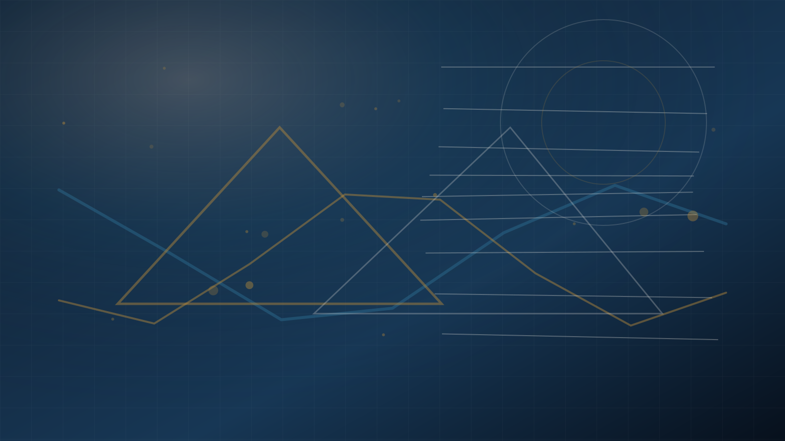

STEM notları
Kısa türetmeler, hata analizleri, temsilî problem çözümleri ve görselleştirmeler.

Yazılar
Bu alan; fizik, matematik, Python, sınav hazırlığı, Almanya eğitim sistemi ve akademik çalışma yöntemleri üzerine kamuya açık içerikler için hazırlanır.
Kısa türetmeler, hata analizleri, temsilî problem çözümleri ve görselleştirmeler.
Kod parçaları, grafikler, simülasyonlar ve teknik rapor mantığı.
Akademik hazırlık, dil seçimi, bölüm araştırması ve gerçekçi planlama üzerine yazılar.